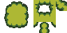
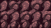

The Terrain Editor builds your outdoor ground out of flat shapes laid on the floor, each one lifted to a chosen height to become an island, hill, or plateau. You decide which of its edges drop away as a cliff and which one slope down as a gentle ramp. On top of that solid ground you scatter grass, brush in patches of dirt and grass, lay down roads with sidewalks, run fences along the cells, and plant trees and houses. Pick a tool, click in the world, and shape it. Nearly everything can be undone with the usual Undo, so you're free to experiment — and a whole drag is treated as one step, so a single Undo wipes the entire stroke you just made, not one tiny piece of it.
Before you start: turning the editor on
The Terrain Editor only wakes up when you're working on a piece of terrain. Here's how to get into it.
-
Add a Terrain to your scene, or click one that's already there. The editor recognizes it as a Terrain — a piece of outdoor ground — and switches itself on.
What you'll see
The moment a piece of terrain is selected, a tall panel appears at the top of the right-hand column, and a glowing grid with a moving cursor pops into the 3D view. That grid is your drawing surface. If you click away to something that isn't terrain, the panel and grid disappear again — that's normal.
-
Pick your terrain style from the "Set:" dropdown at the top of the panel (whatever styles your project provides). This loads the right tile pictures, grass, and cliff textures for the look you want, and decides how tall each height step is.
What you'll see
After you pick a set, the grass and cliff picture lists further down the panel refill with that set's options.
- Make sure the 3D view has focus. Click once inside the 3D world (not on the panel) so your keyboard shortcuts reach the editor. All the letter shortcuts below only work while you're hovering the 3D view with a terrain selected.
To fly the camera around — look closer, orbit, pan, zoom — hold Space. While Space is held, the editor hands you its normal camera controls (move with the usual fly keys, drag with the right and middle mouse buttons, scroll to zoom). Let go of Space and you're instantly back to drawing terrain. Get comfortable holding Space to reposition, releasing to work — it's the rhythm of the whole editor.
Made a mess? Just Undo. The editor bundles a whole drag into a single undo step: one Undo takes back your entire paint stroke or move-drag at once — every blade of grass you swept, the whole rectangle you filled, the full path you dragged an object along — not one little cell at a time. So you can paint boldly and erase a bad pass in one keystroke.
Getting to know the panel
The panel is your control center. The very top never changes; the middle and bottom change automatically depending on which tool you've picked. Let's walk through every single control, top to bottom. Don't worry about memorizing — just know it's all here.
The top strip — always visible
At the very top sits a big colored title that names your current tool (ISLAND, VERTEX, EDGE, FACE, CUT, PAINT, or OBJECT), each in its own color. Below it is a row of tool buttons, then a row of helpers.
- Mode title read-only
- Big centered text that tells you which tool is active right now. It's just a label that changes color and wording as you switch tools — green for Island, yellow for points, red for edges, and so on. Glance here whenever you're unsure what clicking will do.
- Isl [I] — Island
- The button that makes whole islands of ground. Click it, or press I. It stays lit while it's the active tool. Use this to create, move, resize, and delete the big base shapes of land.
- Vtx [V] — Vertex (corner points)
- Lets you grab the individual corner points of an island and drag them, add new ones, or remove them. Click it, or press V.
- Edge [E] — Edge
- Lets you click any single edge of an island and decide what it does: drop off as a Cliff, run down as a Slope, stay Flat, or slope inward. Click it, or press E.
- Face [F] — Face
- Lets you shape the look of a cliff wall — make it lean out as an overhang, curve inward, or look rocky and jagged. Click it, or press F (when nothing is selected).
- Cut [C] — Cut
- Carves holes and pits down into an island, like scooping out a pond or a sunken courtyard. Click it, or press C.
- Paint [P] — Paint
- Switches to painting: grass, ground patches, roads, and fences. Click it, or press P. The panel's lower half changes to the Paint controls.
- Obj [O] — Object
- Switches to placing things — trees, buildings, props. Click it, or press O. The lower half changes to the Object controls.
- Grid [G] — Grid toggle
- Turns the glowing grid and cursor overlay in the 3D view on or off. It starts on. Click it, or press G. Turn it off for a clean preview; turn it back on to keep drawing precisely.
- Rebuild
- Forces the whole terrain to redraw itself from scratch. You rarely need it, but if the ground ever looks stale or out of date after a lot of edits, click Rebuild to refresh it.
- Set: dropdown
- Chooses the terrain style (the bundle of grass, cliff, and tile pictures, plus how tall each height step is). Pick one before you start building. Changing it refills the grass and cliff lists below and changes the look offered to new islands — it does not restyle the islands you've already built or wipe any work, so it's safe to switch sets mid-project. To restyle an existing island, select it and pick a new Grass or Cliff picture for it directly.
The number rows — they appear when they're useful
Just under the buttons sit a few number boxes. They show or hide depending on the tool, because they only matter for some jobs. Here's every one.
- Elev: Island / Vertex
- The height level. When no island is selected, this sets how high your next new island will sit (0 is ground level, higher numbers stack up). With an island selected, changing this number raises or lowers that island live. Ranges from 0 to 30 in steps of 1.
- Verts: Island / Cut
- How many corner points a new island or cut shape will have. A low number gives blocky shapes; a high number gives smooth, round ones. With an island already selected, scrubbing this number reshapes it — adding points along its longest edges, or trimming the least-important ones while keeping its overall outline. Ranges from 3 to 128 (starts at 8).
- Radius: Island / Cut
- How big a new island or cut will be. With an island selected, changing this resizes it outward or inward from its center. Ranges from 0.5 to 20 (starts at 3).
- Brush: Paint
- How wide your paint stroke is — it sets the footprint for grass, ground patches, roads, and fences all at once. Only appears while painting. Ranges from 1 (a single cell) to 5 (a fat brush). Note this is the painting brush; the Object tool has its own separate "Erase Brush" number (1 to 10) that only controls how wide its right-click erase circle is — two different jobs, two different boxes, so don't be surprised to see brush sizes in two places.
Below these is a thin divider line that quietly hides itself whenever there's nothing above it to separate. Nothing to click — just tidiness.
The full panel with the Island tool active: the big green ISLAND title up top, the row of tool buttons (Isl/Vtx/Edge/Face/Cut/Paint/Obj/Grid/Rebuild), the "Set:" dropdown, and the Elev / Verts / Radius number boxes below.
Shaping the land
These first five tools build and sculpt your solid ground. The lower part of the panel shows a "Terrain" section while any of them is active. Let's do each.
Island tool — making the land itself
This is where every world begins: a flat shape of ground lifted to a height.
- Set the Elev, Verts, and Radius for the island you want — its height, how many corners (rounder vs. blockier), and how big.
-
Hold Ctrl and click an empty spot on the grid. A new island appears there, snapped neatly to the grid. You must hold Ctrl to make an island — a plain left-click on empty ground does not create one; it just clears your selection.
What you'll see
The new island shows yellow dots at each of its corners. A small bar appears in the panel reading "Island #N (Elev: …)," telling you which island is selected and how high it sits.
- Click an island to select it, then drag to move it. Be aware the drag begins the instant you press the button — there's no separate "click first, then drag" step, so press right on the island and move in one motion. It slides along the grid, and any grass or ground patches painted on it travel along too. Click empty ground (or right-click anywhere) to deselect.
- Adjust it live. With an island selected, nudging Elev raises or lowers it, Verts reshapes it, and Radius resizes it — all instantly.
- Delete an island you don't want by selecting it and pressing X or Delete.
When an island is selected, the Terrain section gives you these extra controls for how it looks:
- Island label read-only
- Reads "Island #N (Elev: …)" or "No island selected." Just tells you what you've got.
- No Collision checkbox
- Tick this to make the island scenery only — pretty to look at but the player can never walk on or bump into it. Great for far-off background hills you'll never reach; it keeps the world lighter.
- Grass: dropdown
- Picks the grass-and-ground look for the top of this island. The first choice is "(None)." Choose one to dress the surface.
- Cliff: dropdown
- Picks the texture for this island's cliff walls — the rock or dirt you see on the vertical drop-offs.
- Scale: number
- How big the grassy lip is that hangs over the edge of a cliff (that little overhang of turf at the top). Bigger numbers, bigger lip. Ranges 0.5 to 4.
- Droop: number
- How far that grassy lip flops down over the edge. More droop, more of a tumbling-over look. Ranges 0 to 2.
At the very bottom of the Terrain section is an info readout listing every island you've made — its number, its height, and the grass and cliff names you gave it. When the world is empty it simply says "No islands. Click in viewport to create." It's read-only — just a handy overview.
Lost track of an island? Select it and press F to zoom the camera straight to it. F frames whatever you've selected in any tool.
Vertex tool — fine-tuning the shape, corner by corner
Switch here (press V) to grab the individual corner points of an island and reshape it by hand. You'll also see special markers for slope bottoms.
- Click a corner point to grab and drag it. It snaps to the grid as you move. The island's outline redraws live so you can see the new shape forming.
- Select several points at once. Hold Shift and click points to add or remove them from your selection. Or drag a box across empty space to lasso a bunch at once (hold Shift while you box-drag to add to what's already picked). Then drag any of them to move the whole group together.
- Add a new corner point. Look for the green markers at the middle of each edge. Hold Ctrl and click a green midpoint marker to drop a fresh point there, then drag it where you like.
- Shape ramps with the magenta diamonds. If an edge is set to slope, you'll see magenta diamond markers that mark where the ramp bottoms out. Drag those diamonds to reshape the ramp's reach and angle.
- Delete points you don't want by selecting them and pressing X or Delete. If deleting would leave fewer than three corners, the whole island is removed (a shape needs at least three corners to exist).
The Terrain section gives you four buttons in Vertex mode:
- New Island from Selection
- Pick three or more corner points, then click this to spin them into a brand-new island one height step higher — perfect for building a smaller plateau on top of a bigger one. It borrows the same look and ramp settings from the original.
- Add Vertex Next to Selected
- Drops a new point at the middle of the next edge going clockwise around the island's outline (the edge leaving your selected point in the clockwise direction), and selects it for you. Then drag it into place.
- Quick Add 5-Vert Island
- Pops a small five-corner island right beside the point you've selected, pushed outward, at the same height, sized by your Radius box. A fast way to bud off little neighboring patches.
- Delete Selected
- Removes the points you've selected. Same as pressing X or Delete, but this button always works even if your keyboard focus has wandered into the scene list.
Press F while using the Vertex tool to toggle a height filter: when it's on, only the points belonging to the selected island's height can be grabbed, so you don't accidentally snag a point on a different level. (This is the one place F does not zoom the camera or switch to Face.)
Hold Shift as you let go of the mouse after a drag to enter a smooth batch mode — you can chain several drags in a row without the terrain redrawing between each one, and it rebuilds just once when you release Shift. Lovely for nudging many points quickly.
The Vertex tool active: an island with corner-point handles, one point grabbed and glowing, green edge-midpoint markers, magenta diamond ramp-bottom markers, and a blue lasso box mid-drag.
Edge tool — cliffs and ramps
Press E. This is how you decide whether each side of an island drops away as a cliff or eases down as a ramp.
-
Click an edge of an island to select it. (Clicking inside the island instead selects the whole island and clears the edge.)
What you'll see
Each edge draws as a colored line with a little label: Cliff is red, Slope is yellow, Flat is green, Slope-In is cyan. A bar in the panel reads "Edge #E (Island #N)."
- Choose what that edge does from the "Type:" dropdown, or just tap a number key: 1 Cliff, 2 Slope, 3 Flat, 4 Slope-In. Cliff makes a sheer wall; Slope makes a ramp going outward; Flat keeps the edge level; Slope-In ramps inward.
- Split an edge in two by holding Ctrl and clicking it — this drops a new point at its middle, giving you finer control over that side.
When you've made an edge into a slope, the Terrain section reveals ramp controls (these belong to the whole island's slopes):
- Depth: number
- How far the ramp stretches out from the island edge. Changing it regenerates the ramp's bottom edge to match. Starts at 0.5 tiles and up.
- Reset
- Straightens all the ramp-bottom markers back to their default, perfectly-perpendicular positions for the current depth. Click this if you've dragged the magenta diamonds around and want a clean slate.
- Subdiv: number
- Short for "subdivisions" — how finely the surface is sliced up, which is really just a smoothness dial. Here it's how smooth the ramp surface is: more slices means a smoother slope. (You'll see this same "Subdiv" box on cliff faces, ground patches, and roads, and it always means the same thing — higher is smoother.) Ranges 1 to 16 (starts at 4).
- Preset: dropdown
- Quick ramp shapes: Custom, Linear (a straight slope), Smooth, Ease In, Ease Out. Pick one to set the ramp's profile. If you then hand-edit the curve below, it switches to "Custom" automatically.
- Slope curve drag widget
- A little graph you shape by hand to control how the ramp falls from the island edge (left) down to the ramp bottom (right). Drag a point to move it. Double-click an empty spot to add a new point. Right-click a middle point to delete it. The two end points stay locked at the far left and far right — you can move them up and down but not sideways.
Face tool — the look of a cliff wall
Press F (when nothing is selected). This sculpts the vertical face of a cliff — straight, leaning, curved, or rocky.
- Click a cliff wall to target just that one face (the panel reads "Face #N"). Or click inside the island to edit the island's overall default for all its cliffs ("Island Global"). Right-click (or click empty space) to drop back to the island-wide setting.
- Pick a silhouette from "Preset:" — Straight, Concave (curves in), Convex (bulges out), S-Curve, or Overhang (leans out over the base). "Custom" shows up once you hand-edit the curve.
- Fine-tune with the curve and the number boxes (see the list below), then use Reset to clear a single face back to the island's default, or to reset the island default itself.
- Face label read-only
- Reads "Face #N" for one face, or "Island Global" when you're editing the island-wide default.
- Preset: dropdown
- The cliff silhouette: Straight / Concave / Convex / S-Curve / Overhang.
- Reset
- Clears the selected face back to the island default, or resets the island default to factory.
- Profile curve drag widget
- Sculpt the cliff's cross-section: left to right runs top to bottom of the wall, and up/down pushes the wall outward or inward. (For an overhang, push the top outward.) Drag points, double-click to add one, right-click a middle point to delete it; the two ends are locked at top and bottom.
- Scale: number
- How strongly the curve's push is applied — turn it up to exaggerate the shape, down to flatten it. Ranges 0 to 10.
- Rock: number
- Adds rough, rocky bumps to the cliff face. 0 is smooth, 1 is craggy. Ranges 0 to 1.
- Seed: number
- Picks a different random pattern for the rockiness. Change it until you like the rock shape. Ranges 0 to 9999.
- Bias: number
- Where the rough rock gathers: −1 piles it at the bottom, 0 spreads it evenly, 1 piles it at the top. Ranges −1 to 1.
- Subdiv: number
- How finely the wall is divided up and down — higher gives smoother curves. Ranges 1 to 16 (starts at 4).
Cut tool — holes and pits
Press C. This scoops sunken areas out of an island — ponds, courtyards, trenches.
- Set the shape of the cut with the Verts and Radius boxes up top, and how deep it goes with the "Depth:" box in the Cut section.
- Click inside an island to carve a cut there. The panel shows "Cut #N (Depth: D)."
- Click an existing cut to select and drag it around. Adjust "Depth:" to make it deeper or shallower live.
- Remove a cut with the Delete button, or by pressing X / Delete.
- Cut label read-only
- Shows "Cut #N (Depth: D)" when one is selected, otherwise the reminder "Click island to create cut. Del to remove."
- Depth: number
- How many height steps deep the cut goes. Sets the depth for new cuts, and edits the selected cut live. Ranges 1 to 10.
- Delete
- Removes the selected cut.
Painting the ground: grass, dirt, roads, fences
Press P to paint. The bottom of the panel becomes the Paint section. Across the top of it is a row of small tabs — one for each kind of thing you can paint, gathered from your folders of grass, ground patches, roads, and fences. Click a tab to choose what you're painting. The controls below the tab change to match.
Just under the tabs are four shape buttons, shared by every paint type:
- Brush default
- Freehand. Click and drag to paint wherever the cursor goes.
- Rect
- Fills a solid rectangle. Press, drag across an area, release.
- Line
- Draws a straight line. Drag from start to end.
- Outline
- Draws just the border of a rectangle, hollow in the middle. Drag a rectangle.
Below the shapes is the gallery — a scrollable wall of thumbnails for everything you can paint in the current tab. Click a thumbnail to arm it. Grass shows little texture previews; roads and ground patches show previews too; a whole fence family collapses into a single button. Once something is armed, left-click in the world to paint it, right-click to erase, and your Brush size up top sets the width.
Wherever you click, the paint lands on the real, solid ground first — the actual surface of your islands, including the tops of hills and plateaus. Only if your click misses all solid ground does it fall back to the flat drawing grid down at floor level. That's why a click on a raised island paints up on the island, while a click out over empty space paints on the floor — the editor is simply finding the nearest real surface under your cursor.
Grass and foliage
Pick a grass tab, click a grass thumbnail, then brush it onto the ground. It only lands on gentle, walkable ground — it politely refuses steep cliff faces. Right-click erases within the brush. The grass options:
- Density: number
- How many blades drop per click or per area. Higher is lusher. Ranges 0.1 to 20 (starts at 3).
- Hold Rate (ms): number
- How long to wait between blades while you hold the button down. Lower sprays fast; higher gives slow, deliberate dabs; 0 sprays as fast as possible. Ranges 0 to 2000 (starts at 350).
- Random Spacing checkbox
- Tick this so a blade only drops after you've moved a little distance — handy for scattering single tufts far apart instead of a solid carpet.
- Spacing: number
- The minimum gap between scattered blades when Random Spacing is on (the real gap wiggles a bit for a natural look). Ranges 0.1 to 20 (starts at 1.5).
- Random Rotation checkbox
- Tick to spin each blade to a random facing so they don't all look identical.
- Scale: two numbers
- The smallest and largest size a blade can be. Set both the same for uniform grass, or a range for natural variety. Ranges 0.1 to 3 each.
Ground patches (autotile layers)
Pick a ground-patch tab and click a sheet of tile pictures to start a layer. Left-click paints cells, right-click erases, and the shape buttons work too. Patches blend their edges automatically so dirt fades nicely into grass. You can stack several layers and manage them here:
- Layer: dropdown
- Choose which layer you're painting into. Clicking a tile sheet in the grid also makes or selects one for you.
- Rn / Add / Remove / Dupe
- Rn renames the layer (a little name box pops up). Add makes a new empty layer. Remove deletes the selected layer. Dupe copies the layer's settings into a fresh blank one named "(copy)."
- Subdiv: number
- How smooth each patch tile is. Higher is smoother. Ranges 1 to 8 (starts at 4).
- Offset: number
- How far the patch floats above the ground. If it ever flickers against the terrain underneath, nudge this up a touch. Ranges 0 to 0.5 (starts at 0.02).
- Road Mode checkbox
- Turns this ground patch into a road-style surface and reveals curb and sidewalk settings.
- Road Y / Sidewalk / Curb numbers
- Only with Road Mode on: the road's height, the sidewalk-edge height, and how deep the curb wall drops. Tune the curb-and-sidewalk profile.
- Elev: two numbers
- Restrict this patch to a band of heights — a lowest and highest level. Leave either at −1 to mean "no limit."
- Margin: number
- How far the patch may creep past its height limit, for a soft cutoff instead of a hard line. Ranges 0 to 1 (starts at 0.15).
- Hue: number
- Shifts the color of the whole layer — recolor your dirt or grass. Ranges −1 to 1.
- Shadow checkbox + Sh Offset / Opacity
- Tick Shadow to drop a soft shadow under the patch; Offset sets its height, Opacity sets how dark it is.
Roads
Pick a road tab and click a road style. Roads are clever — they grow sidewalks and curbs automatically where they should. There are three sub-modes you switch between with buttons:
- Layer: dropdown + Rn
- Choose which road layer you're painting; Rn renames it.
- Add / Remove / Dupe
- Make, delete, or copy a road layer.
- Mode: Road / Decorate / Demolish Sidewalk buttons
- Road paints and erases the road itself. Decorate stamps markings — crosswalks, dividers, storm drains — onto road you've already laid (it shows an extra grid of overlay choices). Note Decorate only works where road exists: stamping on bare ground or a non-road cell does nothing, so lay your road first, then decorate it. Demolish Sidewalk forces certain cells to be plain road, carving a gap in the automatic sidewalk ring (right-click clears that forced change). In every sub-mode, left-click paints and right-click erases.
- Subdiv / Road Y / Sidewalk / Curb numbers
- Smoothness, road height, sidewalk-edge height, and curb depth.
- SW Width: number
- How wide the sidewalks are, in cells (decimals are fine). Set it to 0 to remove sidewalks from the whole layer. Ranges 0 to 10 (starts at 1).
- Y Offset: number
- Raises or lowers the entire road. Go negative to sink it slightly into the ground. Ranges −2 to 2.
- Elev min/max + Margin numbers
- Same idea as ground patches: keep the road within a band of heights, with a soft margin past the limit.
- Hue: number
- Recolors the road layer.
- Overlay Tiles Decorate mode
- In Decorate mode, a row of overlay buttons appears (divider, crosswalk, storm drain, and more). Click one to arm it, then left-click on road cells to stamp it, right-click to wipe it. The storm drain automatically stamps as a tidy 2×2 block.
- Help line read-only
- A short reminder sentence printed right inside the Road controls, spelling out what left-click and right-click do in the sub-mode you're in. There's nothing to click on it — it's just a friendly nudge so you don't have to remember.
Fences
Pick a fence tab and click a fence family to start a layer. Left-click paints fence cells, right-click erases. The editor figures out the straight pieces and corners for you and links the rails together; corners turn to face inward. The fence options:
- Layer: dropdown + Rn
- Choose or rename the fence layer (one per fence family).
- Add / Remove
- Add a fence layer or remove the selected one.
- Height: number
- Lift or sink the fence relative to the ground it follows. Ranges −1 to 1.
- Yaw °: number
- A small left-right turn (that's what "yaw" means — spinning a piece left or right on the spot) applied to every fence piece, in case the whole family comes out facing slightly off. Ranges −180 to 180.
- Scale: number
- Makes the whole fence family bigger or smaller. Ranges 0.1 to 5 (starts at 1).
- Flip lining checkbox
- Flips which side the decorative trim faces — tick it if the pretty side ends up facing the wrong way.
- Help line read-only
- A short reminder sentence printed right inside the Fence controls: click a fence in the gallery to start a layer, then left-click cells to paint and right-click to erase; the rails connect themselves and corners turn to face inward. Nothing to click — it's just there to jog your memory.
The Paint section with the road tab chosen: the row of paint tabs up top, the Brush/Rect/Line/Outline shape buttons, the thumbnail grid of road styles, the Road/Decorate/Demolish Sidewalk mode buttons, and a road with auto-grown sidewalks running across the grid.
Placing things: trees, buildings, and props
Press O to place objects. The bottom of the panel becomes the Object section. There are two sub-modes — Paint (stamp things down) and Select (pick up and adjust things you've already placed) — chosen with two buttons at the top.
Paint sub-mode — stamping objects
- Choose a Category (Trees, Buildings, Props, and so on) from the "Category:" dropdown, then pick the exact item from the "Object" dropdown.
- Set how it lands: tick "Snap to Grid" and pick how fine with the snap dropdown (a full tile, a half, a quarter, or an eighth). Set "Rotation:" for the facing of new objects.
- Left-click to place one. It snaps to the grid and drops onto the ground at the right height automatically.
- Right-click to erase. The "Erase Brush" number sets how wide a circle of objects you sweep away.
- Place a whole bunch at once. Tick "Place Multiple," then left-click to stage as many ghost previews as you like (right-click removes the nearest staged one). These ghosts are just a preview — they aren't real objects in the world yet, so don't switch tools or modes before committing them, or the whole staged batch is thrown away. When you're happy, click Place Selected to drop them all into the world in one go (now they're real and can be undone in a single Undo), or Clear to discard the staged batch. A little "N staged" label keeps count of how many ghosts are waiting.
- Mode: Paint / Select buttons
- Switch between stamping new objects and editing placed ones.
- Hint line read-only
- A reminder line that changes with what you're doing. When placing one at a time it reads "LMB: Place | RMB: Erase." When you turn on Place Multiple it switches to "LMB: Stage | RMB: Unstage nearest | Place Selected to commit." In Select sub-mode it reads "LMB: Select/Move | Shift: Toggle | Q/E: Rotate | R: Random | Del: Delete." Glance here any time you forget which click does what.
- Category: dropdown
- Which family of objects to browse. You'll see groups like Trees, Trees (Cheap) (lighter, simpler trees for distant filling), Buildings, Props, and Tiled Scenes. "Tiled Scenes" are pre-built little ready-made set pieces — bundles of pieces saved as one stampable item (think a whole market stall or a cluster of rocks dropped in one click) rather than a single tree or rock. Picking a category refills the Object list below it.
- Object dropdown
- The exact item to stamp. "(None)" arms nothing (a handy way to stop placing). Each item quietly carries a few built-in traits set by whoever made it: which family it belongs to, whether it should sway in the wind (many trees are flagged to gently animate once placed — you don't switch this on, it simply comes with the tree), and whether it's been pre-marked as scenery only so the player passes right through it instead of bumping into it. So depending on the item you pick, some objects will breathe in the wind and some will be solid-or-not on their own — that's normal, and it's baked into the item rather than a switch you flip here.
- Snap to Grid checkbox + snap dropdown
- Tick to snap placements, moves, pastes, and tidy-ups to the grid; the dropdown picks how fine (1 tile, 1/2, 1/4, 1/8).
- Rotation: number
- The facing applied to newly placed objects. Ranges 0 to 350 in steps of 10.
- Erase Brush: number
- How wide the right-click erase circle is, in tiles. Ranges 1 to 10 (starts at 2).
- "Dither Shader" — soft fade-in checkbox
- On by default: gives new objects a gentle, grainy fade-in look as they appear, instead of popping in hard. Untick if you'd rather objects show up fully solid and plain.
- Place Multiple checkbox
- Turns on the staging workflow described above.
- Place Selected / Clear buttons + "N staged"
- Commit all your staged previews at once, or discard them; the label shows how many are waiting.
Select sub-mode — adjusting placed objects
Switch to Select to pick up things you've already put down.
- Click an object to select it — your click grabs the single nearest object to where you clicked, so you don't have to be pixel-perfect. Or drag a box across several to scoop them all up at once. Hold Shift and click to add or remove one from the group. Press Esc or right-click to deselect everything.
- Drag a selected object to move it (it snaps if Snap to Grid is on). As with islands, the move starts the instant you press the button on a selected object — there's no separate click-then-drag, so press and slide in one motion.
- Spin and shuffle with the keyboard: Q turns it 10° one way, E turns it 10° the other, and R gives it a fresh random facing.
- Copy and paste: press C to copy your selection, then V to paste it at the cursor.
- Delete: press X or Delete to remove the selected objects.
While something is selected, a "Selected Object" block of controls appears for exact adjustments:
- Rotation: number
- Set the exact facing of the selected object(s), 0 to 359.
- Y Offset: number
- Lift or sink the object above the ground it sits on. Ranges −5 to 5.
- Scale: three numbers
- Width, height, and depth separately. Ranges 0.05 to 10 each.
- "Convex Collision" — Simple vs. Exact solidity checkbox
- Controls how solid the player feels when they walk into the selected object(s). On by default for a Simple Solid: a smooth, rounded invisible shell the player bumps against — light and friendly for most things. Untick for an Exact Solid that hugs the object's true shape, including hollows and gaps (more faithful, a little heavier — use it for things like an archway the player should be able to walk through the middle of).
- "Dither Shader" — soft fade-in checkbox
- Toggle the gentle grainy fade-in look on the selected object(s).
- Quantize to Grid button
- Snaps the selected objects neatly onto the current snap grid — a one-click tidy-up for things you placed by hand.
While you have objects selected in Select sub-mode, the letter keys become object commands instead of tool switches: E rotates (not Edge), C copies (not Cut), V pastes (not Vertex). To switch tools again, first deselect (press Esc), or just click the tool buttons in the panel.
The Object section in Select sub-mode: the Paint/Select buttons, a tree selected in the world with a glowing ring, the hint line reading "LMB: Select/Move | Q/E: Rotate…", and the Selected-Object block showing Rotation, Y Offset, and the three Scale boxes.
What the glowing helpers in the 3D view mean
Everything you draw on top of the world is feedback to guide your hand. None of it shows up in the actual game — it's only here to help you build. Toggle it with G.
- The grid, outlines, and cursor
- The tile grid, the outlines of your islands and cuts, a circle showing your brush size or a highlighted cell, and previews of your rectangle/line/outline shapes. The color tints by tool, so you always know what you're doing.
- Tool-specific markers
- Island draws yellow corner dots. Vertex draws grabbable point handles, the live outline, magenta diamond ramp-bottoms, green edge-midpoint "add here" markers, and a blue lasso box. Edge draws colored, labeled edge lines (Cliff red, Slope yellow, Flat green, Slope-In cyan). Face highlights the cliff wall you've targeted with a "Face N" label. Cut draws red outlines and handles. The curve graphs draw their own points. All of it just tracks your cursor and selection — nothing to click.
Bring your own art
Everything you paint — ground, cliffs, roads, plants, fences — comes from your own picture and model files, dropped into a handful of folders. One small settings file (terrain_config.json) points the editor at those folders, and the editor finds your art automatically and fills the paint palette. You don't wire anything up in code — you just save files into the right folder with the right shape, and they show up. Here's exactly what shape each kind needs, shown with real files from the flagship game so you can copy the format.
Every picture below is actual art from the flagship game, shown pixel-for-pixel. The folder paths (like res://mahou_terrain/grass/) are this game's layout — your game can point the settings file at different folders, but the shape of each file is the part that matters.
Ground — one little sheet, the editor auto-connects it

One sheet holds every edge piece a patch of ground could need. You draw it once; the editor picks the right piece per spot.
- Row 1 the top edge row: top-left corner, top edge, top-right corner.
- Row 2 the middle row: left edge, the solid fill (used everywhere inside), right edge.
- Row 3 the bottom edge row: bottom-left corner, bottom edge, bottom-right corner.
- Cols 4–6 the inner corners and a diagonal piece, for where two patches meet.
The grid is always 6 columns × 3 rows of 16-pixel tiles (96 × 48 in total). You never pick these by hand — paint a patch of ground and the editor looks at which neighbouring squares are the same ground and auto-chooses the matching corner/edge/fill for every square. Save your sheets in res://mahou_terrain/autotiles/ (or grass/); the name (e.g. grass_1.png) becomes its palette label.
Cliffs — a single picture, any size

No grid, no rules — just the picture that wraps a cliff's vertical face. Each cliff in your terrain can use a different one.
Save in res://mahou_terrain/cliffs/. One catch: names ending in _overhang or _base are reserved (the editor uses them for the rim and footing of a cliff automatically), so don't name an ordinary cliff that way.
Roads — little 16-pixel tiles that snap together
Roads are made of individual 16×16 pixel tiles, each its own file, named NUMBER_what[_part].png — the number groups a road set, and what is the kind of tile:
1_tile.pngroad surface- The plain middle of the road.
1_sidewalk.pngedge- The pavement that lines a road.
1_crosswalk_a / _b / _cauto-parts- A striped crossing in three pieces — left end, repeatable middle, right end. The editor picks and rotates the right piece for each square based on its neighbours; you just supply the three. Dividers work the same with
_a / _b; a storm-drain auto-expands into a 2×2 with four rotations.
Save in res://mahou_terrain/roads/.
Grass & plants — a strip the editor scatters
Loose plant decoration is a single picture (often a strip of several blade shapes side by side, e.g. 288 × 16 = eighteen 16-pixel sprites). The Foliage tool scatters them with random rotation, scale and spacing. Save in res://mahou_terrain/foliage/.
Fences — a family of 3D pieces
Fences are 3D model files (.glb) that share a base name, which groups them into one "family":
fence.glbstraight run- The basic length of fence.
fence_L.glb/fence_R.glbcorners/ends- The left- and right-turning half-pieces, for corners, T-joints and ends.
fence_2.glbvariety- An alternate look mixed in along long runs (add
fence_3, etc.).
The editor bundles everything that starts with fence into one fence you paint, snapping the right piece at each corner and end. Save in res://rooms_models/props/exteriors/ (or wherever your settings file's fence folder points). Trees and other 3D props work similarly, and may carry _LOD1, _LOD2… versions (simpler models shown at a distance).
Where it all lives
The settings file terrain_config.json (in res://mahou_terrain/) is the one place that lists your folders. Add a folder there and the editor scans it on the next reload. The folders this game uses:
- Ground sheets
res://mahou_terrain/autotiles/— 6×3 grids of 16px tiles- Cliff faces
res://mahou_terrain/cliffs/— single pictures- Road tiles
res://mahou_terrain/roads/— 16px tiles,NUMBER_what[_part]- Plants
res://mahou_terrain/foliage/— sprite strips- Fences & 3D props
res://rooms_models/props/exteriors/, trees in…/trees/— model files
Every keyboard shortcut
These work while your mouse is over the 3D view and a terrain is selected. The hold-keys are the secret to working fast.
Switching tools
- I — Island tool
- V — Vertex tool (but pastes when objects are selected in Object→Select)
- E — Edge tool (but rotates +10° when objects are selected in Object→Select)
- F — Zooms the camera to your selection; if nothing is selected, switches to the Face tool. (Inside the Vertex tool it instead toggles the height filter.)
- C — Cut tool (but copies when objects are selected in Object→Select)
- P — Paint tool
- O — Object tool
- G — Show or hide the grid and cursor overlay
Hold-down modifiers (the big ones)
- Hold Space — Pause the terrain editor and fly the camera with the normal editor controls (move, orbit, pan, zoom). Release to go right back to editing. Use it constantly.
- Hold Ctrl while clicking — Island: create a new island on empty ground. Vertex: add a point at a green edge-midpoint marker. Edge: split the clicked edge in two.
- Hold Shift while clicking — Add or remove one point (Vertex) or one object (Object→Select) from your selection.
- Hold Shift while box-dragging — Lasso-select that adds to what's already picked (Vertex).
- Hold Shift as you release the mouse — Vertex batch mode: chain several drags smoothly without redrawing between them; it rebuilds once when you let go of Shift.
While editing
- X or Delete — Delete the selected island, points, cut, or objects.
- 1 / 2 / 3 / 4 — In Edge mode, set the selected edge to Cliff / Slope / Flat / Slope-In.
- Left-click — Select, or paint, or place, depending on the tool.
- Left-click and drag — Move things, lasso-select, brush-paint, or drag a shape.
- Right-click — Deselect (shaping tools), erase (paint and object erase), remove the nearest staged object (object batch), or clear a forced change (the road Demolish Sidewalk tool).
Objects (in Select sub-mode, with a selection)
- Q — Rotate −10°
- E — Rotate +10°
- R — Randomize the facing
- C — Copy
- V — Paste at the cursor
- Esc — Deselect everything
In the slope and cliff curve graphs
- Drag a point — Move it (the two end points can only move up and down).
- Double-click empty space — Add a new point.
- Right-click a middle point — Delete it.
There is no "hold to corner-snap" key in this editor (no hold-S like in Sprytile, if you've used that). Precise placement instead comes from the Snap to Grid checkbox plus the snap-fineness dropdown, and from the Rotation boxes. The hold-while-you-work keys are just these three: Space to fly the camera, Shift for Vertex batch mode and adding to a selection, and Ctrl for the special create/insert/split clicks (remember — without holding Ctrl you cannot make an island; a plain click on empty ground only deselects).
Grass and objects land on the real, walkable ground first — the actual surface of your hills and islands — and only drop to the flat floor grid if your click misses all solid ground. Grass also won't stick to steep cliff faces, so you can paint freely without it climbing the walls.